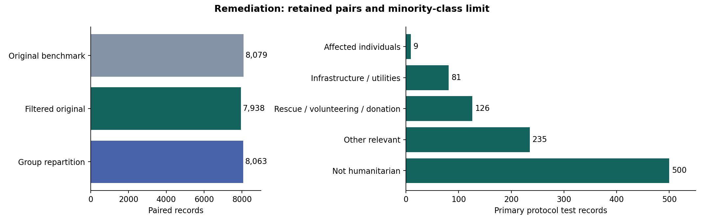
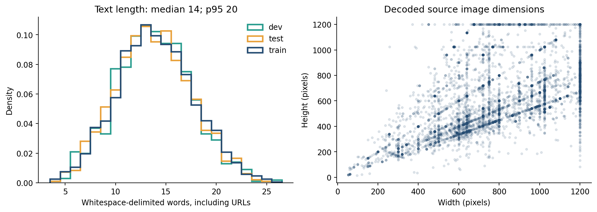
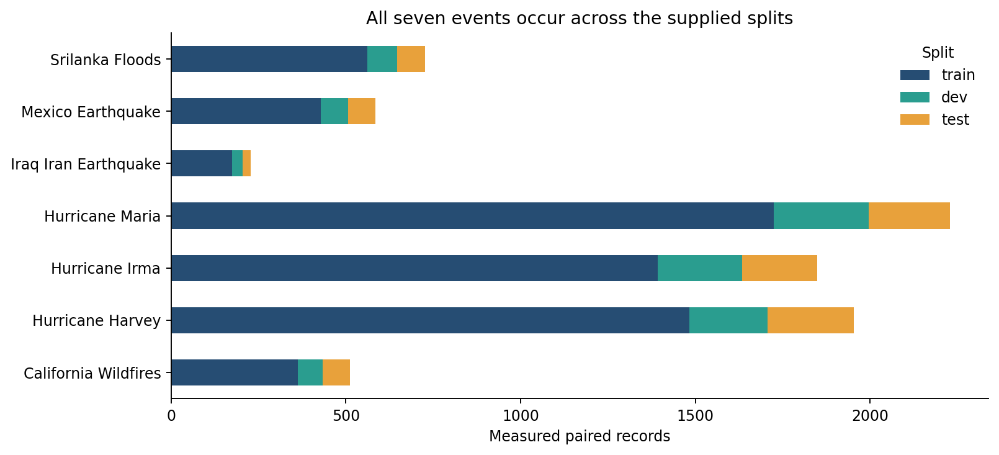

Group members
HMHoàng Trọng Huy Minh2452743 · A3 contribution: 0%
TTVõ Lê Thành Triệu2453297 · Team Leader · A3 contribution: 0%
NQNguyễn Huỳnh Nam Quốc2453089 · A3 contribution: 100%
CO3133 · Deep Learning and Its Applications
Ho Chi Minh City University of Technology — VNU-HCM
Faculty of Computer Science and Engineering
Group members
Instructor
Lê Thành Sách
Semester 261
GitHub repository↗Assignment content
M1 protocol locked; M2 draft experiments completed 17 November 2026. Nine real development runs: image-only, text-only and simple concatenation (seeds 42/43/44). The held-out test has not been evaluated; gated fusion, ablation, final report, slides and video are M3 work. Prior dataset approval waiver is group-reported, not independently attested.
Humanitarian Image and Text Classification with Gated Fusion. Predict one of five humanitarian classes from a tweet and its attached image. Research question: under fixed frozen encoders and leakage-controlled splits, does learned gating improve macro-F1 over concatenation and unimodal baselines, and which modality interactions explain gains or failures?
CrisisMMD v2.0, five-class humanitarian image-text classification. Locked primary filtered_original: 7,938 pairs = 6,001 train / 986 dev / 951 test. This is an explicitly mirror-derived custom benchmark, not authenticated original archive equivalence. Records retain original split membership; the alternative repartition is backup only.
| ID | Class | Train | Dev | Test | Total |
|---|---|---|---|---|---|
| 0 | affected individuals | 71 | 9 | 9 | 89 |
| 1 | infrastructure and utility damage | 601 | 80 | 81 | 762 |
| 2 | rescue volunteering or donation effort | 901 | 148 | 126 | 1175 |
| 3 | other relevant information | 1247 | 235 | 235 | 1717 |
| 4 | not humanitarian | 3181 | 514 | 500 | 4195 |
| Total | 6001 | 986 | 951 | 7938 | |
Of 8,079 audited source pairs, 141 are excluded: 7 unresolved source-annotation discrepancies, 9 confirmed missing-image placeholders and 125 lower-priority duplicate/leakage-related records. No silent relabelling. The original file-level missing/corrupt-image and empty-text rates were 0%; decodable placeholders were a separate content problem.



QCRI source records link images to their posted tweets. Components combine tweet IDs, exact/pixel image hashes, raw/normalized text hashes and reviewed duplicate/shared-asset edges, then retain test > dev > train members. Upstream license: CC BY-NC-SA 4.0; credit Alam, Ofli and Imran and the named mirror. Exact versions, labels, provenance, split rules and EDA sources →
M2 implemented and run: frozen ResNet-18 image features (512 dimensions); frozen DistilBERT text features (768 dimensions); independently fitted image-only and text-only heads and a concatenation fusion head. Both projected representations use 128 dimensions. All three M2 models have real development results. Improved gated fusion and its fixed-gate ablation are M3 plans, not executed results.
Observed: 6,001 train / 986 dev / 951 sealed test pairs (custom filtered_original); three seeds 42/43/44 per M2 architecture; weighted cross-entropy, Adam (learning rate 0.001, weight decay 0.0001), dropout 0.2, batch size 64, early stopping on development macro-F1 with patience 5. Feature extraction ran on an NVIDIA Tesla T4 using pinned pretrained encoders. No test-set model selection or test scores were generated.
M2 REAL development metrics — mean ± sample SD over three seeds, not held-out test performance.
| Architecture | Macro-F1 | Accuracy | Head parameters |
|---|---|---|---|
| Image-only | 0.5746 ± 0.0068 | 0.6930 ± 0.0077 | 66,309 |
| Text-only | 0.6811 ± 0.0016 | 0.7762 ± 0.0064 | 99,077 |
| Concatenation | 0.8116 ± 0.0041 | 0.8540 ± 0.0044 | 197,637 |
See M2 scientific report (PDF) for per-class F1, colored confusion matrix, compute accounting and limitations. Metric summary. These numbers come from 9 saved real model runs and are not synthetic smoke outputs.
Concatenation exceeds the stronger text-only baseline by 0.1305 development macro-F1 and image-only by 0.2370. This is evidence of useful joint features for this development split, but not a held-out generalization claim or statistical significance proof. The five-class dataset is imbalanced; the rare affected-individuals class has only nine development records.
The M2 report contains real per-class F1 values and a confusion matrix based on saved development predictions. Failure patterns and modality-complementarity counts are interpreted from the paired unimodal/fusion predictions; representative raw image-text qualitative review is still limited. Semantic support/conflict case analysis on raw media and controlled fusion ablation are reserved for M3.
Original agreed-label archive access failed with HTTP 403 in the earlier audit; equivalence is unproved. The seven annotation differences remain unresolved and quarantined. The minority class has only 9 dev / 9 test pairs. No universal semantic-duplicate clearance, unseen-disaster generalization or deployment reliability is established.
Nine trained M2 head checkpoints and their logs are published. The saved best.pt checkpoints require the pinned pretrained encoders and frozen feature recipe; they are not standalone end-to-end image-text models. M2 checkpoints · Reproduction instructions · Evidence verification code. Held-out test evaluation has not occurred.
M2 is a graded experimental draft. Final slides and presentation report belong to M3 and are not claimed complete.
Not prepared at M2. Per the CO3133 final milestone requirements, the public/unlisted group video is a M3 deliverable. No fabricated video URL is supplied.
For M2, ChatGPT Work/Codex assisted methodology checks, script preparation, result analysis, LaTeX drafting and publication preparation. Real data extraction and 9 training runs were executed by the student on a Colab Tesla T4; recorded dev metrics were checked from saved model outputs. The underlying AI model/build is not independently verified; final student review and LMS submission remain student responsibilities. No M3 or test metrics are claimed.